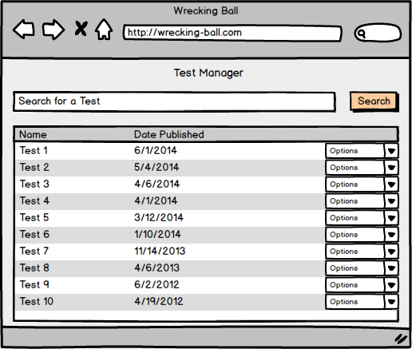
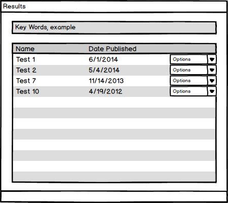

This introductory scenario shows the user how to search for a test. From the test bank, the user may choose key words to narrow the search and look for a particular test either by the key words or by the date published.
After clicking on Test Manager
on the menu page, it will bring the user to the management page as shown in Figure 1.

Figure 1: Test Manager.
Tests are displayed by the date they are created, so if the user wishes to search for a certain test, they may use the publish date as an additional resource to locate the desired test.

Figure 2: Search Results
By clicking on the dropdown menu, the user may select to either delete tests or edit a previously existing test as shown in Figure 3.
To see what options there are when editing or deleting a test, see Section 2.3.3.
Figure 3: Option menu